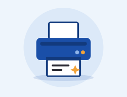

Bianco e nero High Quality
Stampa in bianco e nero del Suo originale su carta per stampa digitale da 100 g.
⏱ Pronto subito da portare via
- Personalizzabile
- Stampa in bianco e nero
- Qualità d'immagine elevata, costante e simile all'offset
- Loghi aziendali o simboli non sono un problema
- Formati bitmap (jpg, png, gif, bmp ecc.)
- Curve o grafica vettoriale (cdr, ai ecc.)
- Ideale per le foto (anche con testo)
- Realizzata con Canon imagePress
- Stampa su carta per stampa digitale da 100 g
Prezzi
- Gli sconti quantità si riferiscono a originali eseguibili in un'unica lavorazione.
- Se i dati vengono trasmessi via e-mail, chiavetta USB o altri supporti dati, per il primo foglio addebitiamo almeno .
Tutti i prezzi IVA del 20 % inclusa.